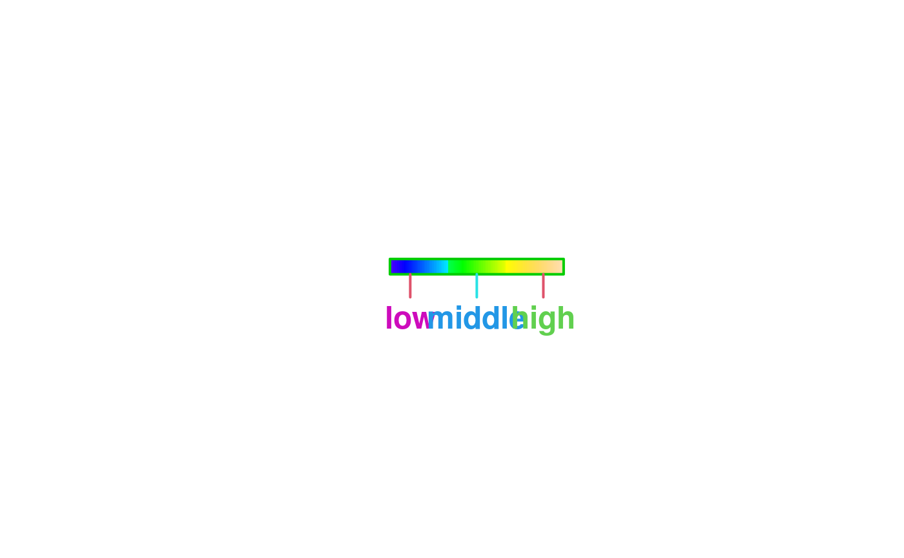
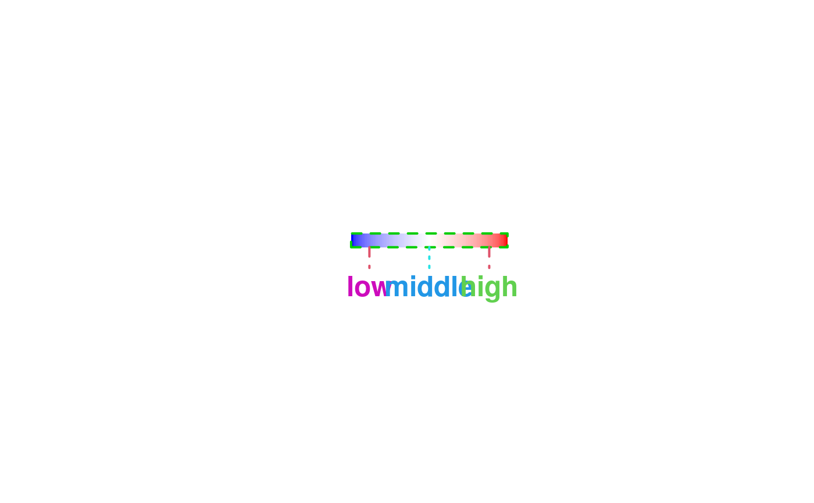
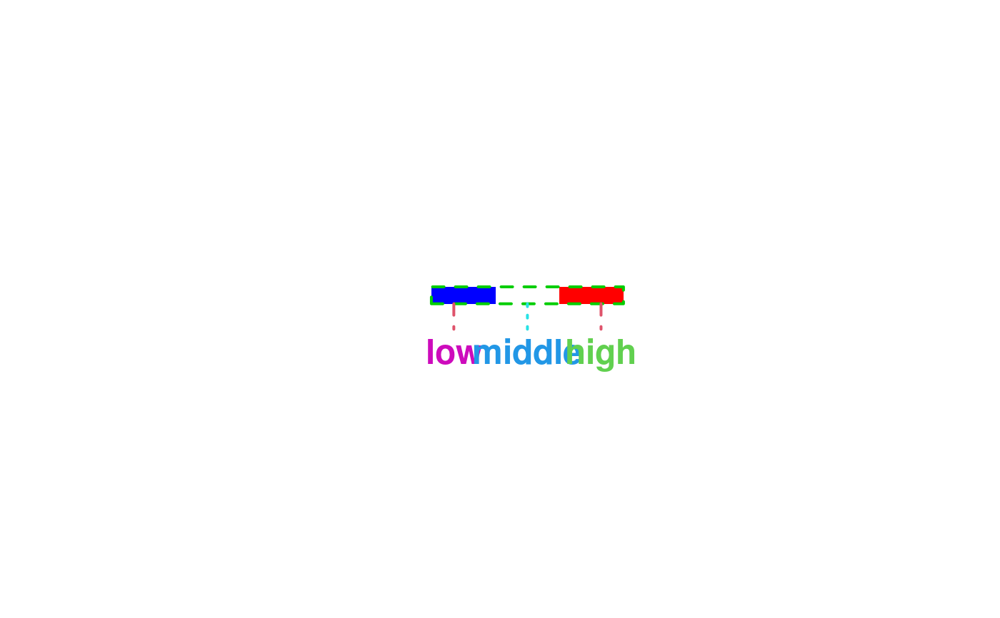
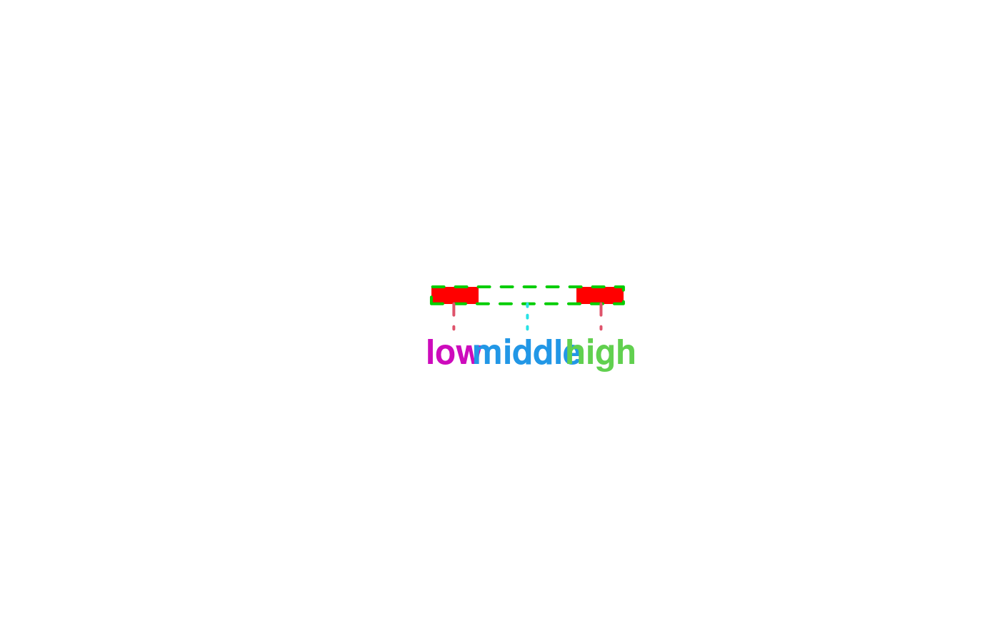

Plot a Color Legend
colorlegend.RdFunction to generate a color legend, the legend may be added to an existing plot or drawn in a separate plotting window.
colorlegend(color = NULL, ncol = NULL, x = NULL, breaks = NULL, pos = "center", shift = 0.02, side.legend = 1L, side.ticks = 1L, range = NULL, lrange = NULL, width = 0.25, height = 0.05, scale = TRUE, xlim = NULL, ylim = NULL, plot = NULL, full = FALSE, add = FALSE, col.border = "black", lty.border = 1L, lwd.border = 1L, ticks = TRUE, at = NULL, col.ticks = "black", lwd.ticks = 1L, lty.ticks = 1L, length.ticks = 0.3, labels = NULL, distance.labels = 0, col.labels = "black", cex.labels = 1L, digits = 2L, swap = FALSE, symmetric = TRUE, xpd = NULL, title = NULL, side.title = 2, shift.title = c(0, 0), cex.title = 1, ...)
Arguments
| color | Character, integer. The colors for the legend, may also be a function, e.g.
|
|---|---|
| ncol | Integer, the number of different colors that should be generated if |
| x | Numeric, values for which the color legend should be drawn. |
| breaks | Numeric, a set of breakpoints for the colors: must give one more breakpoint than
|
| pos | Character, numeric. The position of the legend. Either a numeric vector, e.g.
|
| shift | Numeric, if argument |
| side.legend | Integer, if set to |
| side.ticks | Integer, if set to |
| range | Numeric, specifies a range for |
| lrange | Numeric, specifies the range of legend. |
| width | Numeric, the width of the legend, if |
| height | Numeric, the height of the legend, if |
| scale | Logical, if set to |
| xlim | Numeric, the x-limits of the plotting window the legend should be added for, numeric
vector, e.g., returned from function |
| ylim | Numeric, the y-limits of the plotting window the legend should be added for, numeric
vector, e.g., returned from function |
| plot | Logical, if set to |
| full | Logical, if set to |
| add | Logical, if set to |
| col.border | The color of the surrounding border line of the legend. |
| lty.border | The line type of the surrounding border line of the legend. |
| lwd.border | The line width of the surrounding border line of the legend. |
| ticks | Logical, if set to |
| at | Numeric, specifies at which locations ticks and labels should be added. |
| col.ticks | The colors of the ticks. |
| lwd.ticks | The line width of the ticks. |
| lty.ticks | The line type of the ticks. |
| length.ticks | Numeric, the length of the ticks as percentage of the |
| labels | Character, specifies labels that should be added to the ticks. |
| distance.labels | Numeric, the distance of the labels to the ticks, proportional to the length of the ticks. |
| col.labels | The colors of the labels. |
| cex.labels | Text size of the labels. |
| digits | Integer, the decimal places if labels are numerical. |
| swap | Logical, if set to |
| symmetric | Logical, if set to |
| xpd | Sets the |
| title | Character, a title for the legend. |
| side.title | Integer, |
| shift.title | Numeric vector of length 2. Specifies a possible shift of the title in either x- or y-direction. |
| cex.title | Text size for the title. |
| … | Other graphical parameters to be passed to function |
Value
A named list with the colors generated, the breaks and the function map, which may
be used for mapping of x values to the colors specified in argument colors, please
see the examples below.
Examples
## Play with colorlegend. colorlegend()colorlegend(side.legend = 2)colorlegend(side.legend = 2, side.ticks = 2)colorlegend(height = 2)colorlegend(color = heat.colors, ncol = 9)colorlegend(color = heat.colors, ncol = 9, swap = TRUE)colorlegend(pos = "bottomleft")colorlegend(pos = "topleft")colorlegend(pos = "topright")colorlegend(pos = "bottomright")## Take x values for the color legend. x <- runif(100, -2, 2) colorlegend(color = diverge_hcl, x = x)colorlegend(color = rainbow_hcl, x = x, at = c(-1.5, 0, 1.5), labels = c("low", "middle", "high"), length.ticks = 1.5)colorlegend(color = heat_hcl, x = x, at = c(-1.5, 0, 1.5), labels = c("low", "middle", "high"), length.ticks = 1.5, lwd.border = 2, lwd.ticks = 2, cex.labels = 1.5, font = 2)colorlegend(color = topo.colors, x = x, at = c(-1.5, 0, 1.5), labels = c("low", "middle", "high"), length.ticks = 1.5, lwd.border = 2, lwd.ticks = 2, cex.labels = 1.5, font = 2, col.border = "green3", col.ticks = c(2, 5, 2), col.labels = c(6, 4, 3))colorlegend(color = diverge_hsv, x = x, at = c(-1.5, 0, 1.5), labels = c("low", "middle", "high"), length.ticks = 1.5, lwd.border = 2, lwd.ticks = 2, cex.labels = 1.5, font = 2, col.border = "green3", col.ticks = c(2, 5, 2), col.labels = c(6, 4, 3), lty.border = 2, lty.ticks = c(2, 3, 2))colorlegend(color = diverge_hsv, x = x, at = c(-1.5, 0, 1.5), labels = c("low", "middle", "high"), length.ticks = 1.5, lwd.border = 2, lwd.ticks = 2, cex.labels = 1.5, font = 2, col.border = "green3", col.ticks = c(2, 5, 2), col.labels = c(6, 4, 3), lty.border = 2, lty.ticks = c(2, 3, 2), ncol = 3)colorlegend(color = c("red", "white", "red"), x = x, at = c(-1.5, 0, 1.5), labels = c("low", "middle", "high"), length.ticks = 1.5, lwd.border = 2, lwd.ticks = 2, cex.labels = 1.5, font = 2, col.border = "green3", col.ticks = c(2, 5, 2), col.labels = c(6, 4, 3), lty.border = 2, lty.ticks = c(2, 3, 2), ncol = 3, breaks = c(-2, -1, 1, 2))## Combine plot with color legend. n <- 100 x <- y <- seq(-3, 3, length.out = n) z <- outer(sin(x), cos(x)) pal <- colorlegend(color = diverge_hcl, x = z, plot = FALSE) op <- par(no.readonly = TRUE) par(mar = c(4.1, 4.1, 1.1, 1.1)) layout(matrix(c(1, 2), nrow = 1), widths = c(1, 0.3)) image(x = x, y = y, z = z, col = pal$colors, breaks = pal$breaks) par(mar = c(4.1, 0.1, 1.1, 3.1)) colorlegend(color = diverge_hcl, x = z, plot = TRUE, full = TRUE, side.legend = 2, side.ticks = 2)par(op) ## Another example with different plot. n <- 50 x <- sin(seq(-3, 3, length.out = n)) pal <- colorlegend(color = diverge_hcl, x = x, plot = FALSE) op <- par(no.readonly = TRUE) par(mar = c(7.1, 4.1, 1.1, 1.1)) barplot(x, border = "transparent", col = pal$map(x))colorlegend(color = diverge_hcl, x = x, plot = FALSE, add = TRUE, xlim = c(0, 60), ylim = c(-1, 1), pos = c(0, -0.15), xpd = TRUE, scale = FALSE, width = 60, height = 0.15, at = seq(min(x), max(x), length.out = 9))par(op)